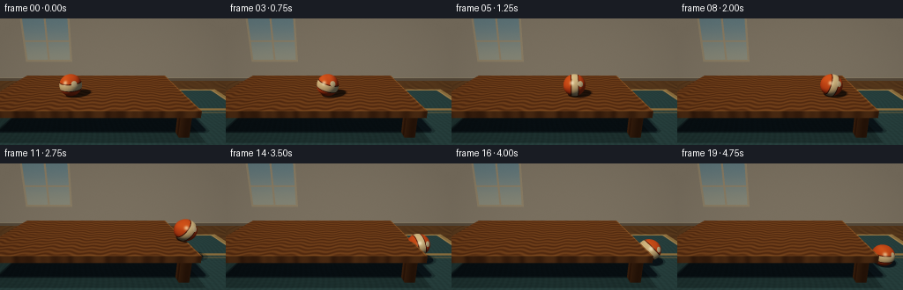
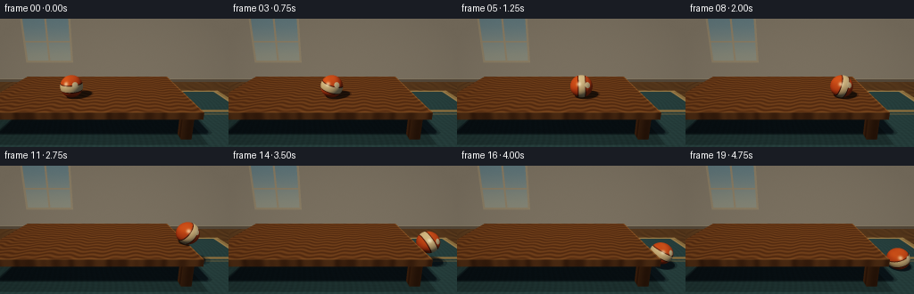
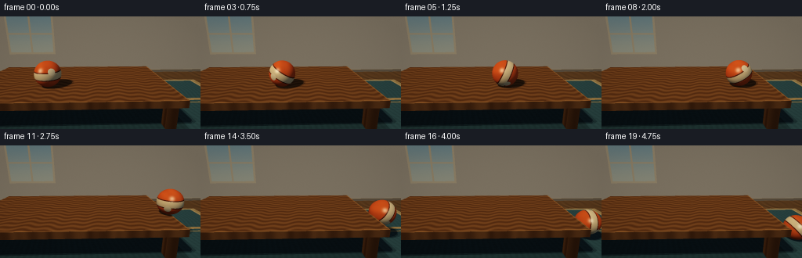
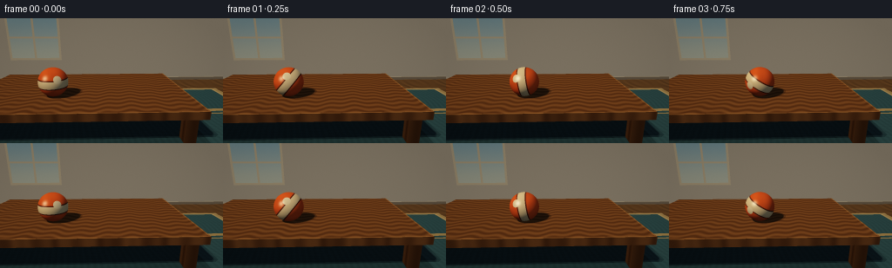
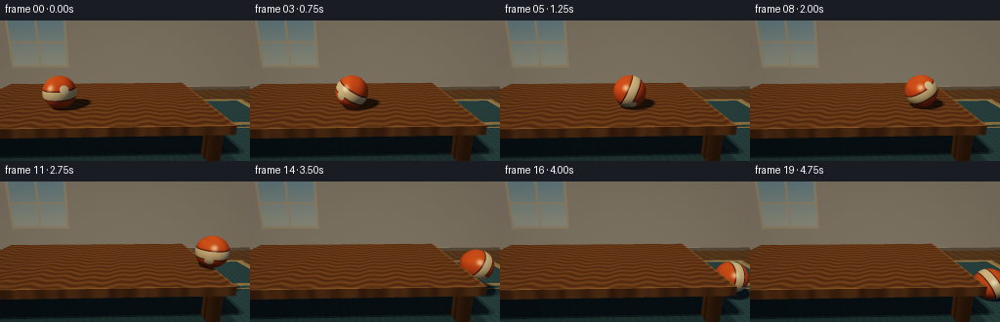
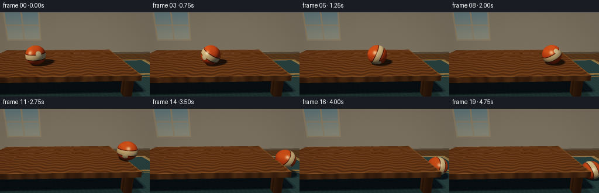

CODING AGENTS AS PIXEL WORLD MODELS
traex/DeepSeek-V4.1-Flash · instance_preservation_0019
点击播放 · 原生 RGB 像素
逐轮保存的候选
回放视频、检查图与代码变化。
每份候选均可单独播放。实际图片检查记录在下方工具轨迹中。
候选 01播放与检查图
点击播放 · 原生 RGB 像素

展开代码变化
--- 上一保存版本
+++ 本次保存版本
@@ -0,0 +1,468 @@
+"""Procedurally render a ball rolling off a table.
+
+The scene is traced directly with NumPy. No input image or external rendering
+engine is used; the output is deterministic and regenerated by running this file.
+"""
+
+from pathlib import Path
+
+import cv2
+import numpy as np
+
+import artifact_io
+
+
+WIDTH = 256
+HEIGHT = 144
+FRAMES = 20
+SUPERSAMPLE = 3
+
+EYE = np.array([0.0, 2.35, 7.2], dtype=np.float64)
+TARGET = np.array([0.0, 0.15, 0.0], dtype=np.float64)
+VERTICAL_FOV = np.deg2rad(38.0)
+
+FLOOR_Y = -0.95
+WALL_Z = -3.8
+TABLE_MIN = np.array([-4.20, -0.22, -1.50])
+TABLE_MAX = np.array([2.55, 0.00, 2.40])
+LEGS = [
+ (np.array([-3.98, FLOOR_Y, 1.98]), np.array([-3.66, -0.20, 2.30])),
+ (np.array([2.02, FLOOR_Y, 1.98]), np.array([2.34, -0.20, 2.30])),
+ (np.array([-3.98, FLOOR_Y, -1.38]), np.array([-3.66, -0.20, -1.06])),
+ (np.array([2.02, FLOOR_Y, -1.38]), np.array([2.34, -0.20, -1.06])),
+]
+BALL_RADIUS = 0.38
+BALL_START_X = -1.45
+BALL_EDGE_X = 2.50
+BALL_Z = 1.15
+
+SUN = np.array([-0.46, 0.78, 0.43], dtype=np.float64)
+SUN /= np.linalg.norm(SUN)
+FILL = np.array([0.58, 0.34, 0.72], dtype=np.float64)
+FILL /= np.linalg.norm(FILL)
+RIM = np.array([0.32, 0.22, -0.92], dtype=np.float64)
+RIM /= np.linalg.norm(RIM)
+
+MAT_WALL = 0
+MAT_TABLE = 1
+MAT_LEG = 2
+MAT_RUG = 3
+MAT_FLOOR = 4
+MAT_BALL = 5
+
+
+def normalize(vector):
+ return vector / np.linalg.norm(vector)
+
+
+def camera_rays(width, height):
+ forward = normalize(TARGET - EYE)
+ right = normalize(np.cross(forward, np.array([0.0, 1.0, 0.0])))
+ up = np.cross(right, forward)
+ tan_v = np.tan(VERTICAL_FOV * 0.5)
+ aspect = width / height
+
+ px = (np.arange(width, dtype=np.float64) + 0.5) / width
+ py = (np.arange(height, dtype=np.float64) + 0.5) / height
+ sx = (2.0 * px - 1.0) * tan_v * aspect
+ sy = (1.0 - 2.0 * py) * tan_v
+ gx, gy = np.meshgrid(sx, sy)
+ directions = (
+ forward[None, None, :]
+ + gx[:, :, None] * right[None, None, :]
+ + gy[:, :, None] * up[None, None, :]
+ )
+ directions /= np.linalg.norm(directions, axis=2, keepdims=True)
+ return directions.reshape(-1, 3)
+
+
+def ray_sphere(origins, directions, center, radius):
+ oc = origins - center
+ half_b = np.einsum("ij,ij->i", oc, directions)
+ c = np.einsum("ij,ij->i", oc, oc) - radius * radius
+ discriminant = half_b * half_b - c
+ valid = discriminant > 0.0
+ root = np.sqrt(np.maximum(discriminant, 0.0))
+ t_near = -half_b - root
+ t_far = -half_b + root
+ t = np.where(t_near > 1.0e-5, t_near, t_far)
+ valid &= t > 1.0e-5
+ return np.where(valid, t, np.inf)
+
+
+def ray_box(origins, directions, box_min, box_max):
+ inverse = 1.0 / np.where(np.abs(directions) < 1.0e-10, 1.0e-10, directions)
+ t1 = (box_min[None, :] - origins) * inverse
+ t2 = (box_max[None, :] - origins) * inverse
+ lower = np.minimum(t1, t2)
+ upper = np.maximum(t1, t2)
+ t_enter = np.max(lower, axis=1)
+ t_exit = np.min(upper, axis=1)
+ valid = (t_exit >= np.maximum(t_enter, 0.0)) & (t_enter > 1.0e-5)
+ axis = np.argmax(lower, axis=1)
+ normal = np.zeros_like(origins)
+ rows = np.arange(len(origins))
+ normal[rows, axis] = np.where(directions[rows, axis] > 0.0, -1.0, 1.0)
+ return np.where(valid, t_enter, np.inf), normal
+
+
+def hit_at(origins, directions, distances, normals):
+ points = origins + directions * distances[:, None]
+ return points, normals
+
+
+def occluded_by_sphere(points, light_dirs, center, radius):
+ t = ray_sphere(points, light_dirs, center, radius)
+ return np.isfinite(t)
+
+
+def occluded_by_box(points, light_dirs, box_min, box_max):
+ t, _ = ray_box(points, light_dirs, box_min, box_max)
+ return np.isfinite(t)
+
+
+def smoothstep(edge0, edge1, value):
+ x = np.clip((value - edge0) / (edge1 - edge0), 0.0, 1.0)
+ return x * x * (3.0 - 2.0 * x)
+
+
+def hash_noise(x, y):
+ return np.mod(np.sin(x * 127.1 + y * 311.7) * 43758.5453, 1.0)
+
+
+def ball_position(frame):
+ """Return center, rotation angle, and path distance for one frame."""
+ if frame <= 11:
+ u = frame / 11.0
+ x = BALL_START_X + (BALL_EDGE_X - BALL_START_X) * u
+ y = BALL_RADIUS
+ roll_distance = x - BALL_START_X
+ else:
+ x = BALL_EDGE_X + 0.105 * (frame - 11)
+ roll_distance = x - BALL_START_X
+ contact_y = FLOOR_Y + BALL_RADIUS
+ if frame <= 15:
+ t = (frame - 11) * 0.25
+ y = BALL_RADIUS - 0.5 * 1.90 * t * t
+ elif frame == 16:
+ y = contact_y + 0.21
+ elif frame == 17:
+ y = contact_y
+ elif frame == 18:
+ y = contact_y + 0.075
+ else:
+ y = contact_y
+ return np.array([x, y, BALL_Z]), -roll_distance / BALL_RADIUS
+
+
+def table_color(points, normals):
+ x = points[:, 0]
+ y = points[:, 1]
+ z = points[:, 2]
+ grain = 0.5 + 0.5 * np.sin(
+ 23.0 * z + 2.7 * np.sin(2.4 * x) + 1.25 * np.sin(9.5 * x + 0.8 * z)
+ )
+ fine = 0.5 + 0.5 * np.sin(83.0 * z + 7.0 * x)
+ color = np.empty((len(points), 3), dtype=np.float64)
+ dark = np.array([0.16, 0.075, 0.030])
+ light = np.array([0.42, 0.235, 0.105])
+ mix = (0.24 + 0.52 * grain + 0.08 * fine)[:, None]
+ color[:] = dark[None, :] * (1.0 - mix) + light[None, :] * mix
+
+ top = normals[:, 1] > 0.5
+ front = normals[:, 2] > 0.5
+ right = normals[:, 0] > 0.5
+ color[front] *= 0.82
+ color[right] *= 0.70
+
+ # A restrained bevel catches the window light along the tabletop edge.
+ bevel = top & ((x > TABLE_MAX[0] - 0.045) | (z > TABLE_MAX[2] - 0.045))
+ color[bevel] += np.array([0.16, 0.10, 0.045])
+ return color
+
+
+def rug_color(points):
+ x = points[:, 0]
+ z = points[:, 2]
+ base = np.array([0.105, 0.205, 0.235])
+ color = np.broadcast_to(base, (len(points), 3)).copy()
+
+ stripe = 0.5 + 0.5 * np.sin(35.0 * x + 4.0 * np.sin(2.0 * z))
+ weave = 0.5 + 0.5 * np.sin(42.0 * z + 1.5 * np.sin(5.0 * x))
+ color *= (0.90 + 0.10 * stripe + 0.05 * weave)[:, None]
+
+ band = (np.abs(z - 0.30) < 0.10) | (np.abs(z - 0.58) < 0.035)
+ color[band] = np.array([0.53, 0.42, 0.24])
+ border = (
+ (x < -5.25)
+ | (x > 5.25)
+ | (z < -2.05)
+ | (z > 4.25)
+ )
+ inner_border = (
+ (np.abs(x - -5.25) < 0.055)
+ | (np.abs(x - 5.25) < 0.055)
+ | (np.abs(z - -2.05) < 0.055)
+ | (np.abs(z - 4.25) < 0.055)
+ )
+ color[border] = np.array([0.50, 0.40, 0.23])
+ color[inner_border] = np.array([0.62, 0.50, 0.30])
+ return color
+
+
+def wall_color(points):
+ x = points[:, 0]
+ y = points[:, 1]
+ base = np.array([0.61, 0.585, 0.535])
+ color = np.broadcast_to(base, (len(points), 3)).copy()
+
+ # A tall window on the left motivates the warm directional light.
+ inside = (x > -5.25) & (x < -2.45) & (y > 0.25) & (y < 2.85)
+ if np.any(inside):
+ sky_mix = smoothstep(0.25, 2.85, y[inside])
+ low = np.array([0.68, 0.74, 0.70])
+ high = np.array([0.43, 0.62, 0.74])
+ color[inside] = low[None, :] * (1.0 - sky_mix[:, None]) + high[None, :] * sky_mix[:, None]
+
+ frame = inside & (
+ (np.abs(x + 3.85) < 0.055)
+ | (np.abs(y - 1.48) < 0.045)
+ | (x < -5.13)
+ | (x > -2.57)
+ | (y < 0.37)
+ | (y > 2.73)
+ )
+ color[frame] = np.array([0.72, 0.67, 0.56])
+
+ baseboard = y < -0.77
+ color[baseboard] = np.array([0.38, 0.34, 0.29])
+ trim_line = (y >= -0.79) & (y < -0.75)
+ color[trim_line] = np.array([0.72, 0.67, 0.56])
+ return color
+
+
+def ball_color(points, normals, center, rotation):
+ local = points - center
+ c = np.cos(rotation)
+ s = np.sin(rotation)
+ lx = c * local[:, 0] - s * local[:, 1]
+ ly = s * local[:, 0] + c * local[:, 1]
+ lz = local[:, 2]
+
+ base = np.array([0.91, 0.235, 0.075])
+ color = np.broadcast_to(base, (len(points), 3)).copy()
+ color *= (0.96 + 0.04 * np.sin(17.0 * lx + 13.0 * ly))[:, None]
+
+ stripe = np.abs(ly) < 0.105
+ stripe_edge = (np.abs(ly) >= 0.105) & (np.abs(ly) < 0.135)
+ color[stripe] = np.array([0.93, 0.78, 0.53])
+ color[stripe_edge] = np.array([0.25, 0.075, 0.035])
+
+ # A small off-center mark makes the rotation legible without a busy pattern.
+ local_unit = local / BALL_RADIUS
+ emblem_axis = np.array([0.50, 0.36, 0.79])
+ emblem_axis /= np.linalg.norm(emblem_axis)
+ dot = local_unit @ emblem_axis
+ emblem = dot > 0.965
+ color[emblem] = np.array([0.98, 0.86, 0.62])
+ return color
+
+
+def shade_surface(points, normals, material, view_dirs, center, rotation):
+ count = len(points)
+ base = np.zeros((count, 3), dtype=np.float64)
+
+ for mat in np.unique(material):
+ mask = material == mat
+ if mat == MAT_WALL:
+ base[mask] = wall_color(points[mask])
+ elif mat == MAT_TABLE:
+ base[mask] = table_color(points[mask], normals[mask])
+ elif mat == MAT_LEG:
+ wood = table_color(points[mask], normals[mask])
+ base[mask] = wood * 0.68
+ elif mat == MAT_RUG:
+ base[mask] = rug_color(points[mask])
+ elif mat == MAT_FLOOR:
+ x = points[mask, 0]
+ z = points[mask, 2]
+ grain = 0.5 + 0.5 * np.sin(37.0 * z + 5.0 * np.sin(3.0 * x))
+ dark = np.array([0.16, 0.105, 0.060])
+ light = np.array([0.34, 0.225, 0.120])
+ base[mask] = dark[None, :] * (1.0 - grain[:, None]) + light[None, :] * grain[:, None]
+ elif mat == MAT_BALL:
+ base[mask] = ball_color(points[mask], normals[mask], center, rotation)
+
+ ndotl = np.maximum(np.einsum("ij,ij->i", normals, SUN[None, :]), 0.0)
+ fill_ndotl = np.maximum(np.einsum("ij,ij->i", normals, FILL[None, :]), 0.0)
+ upward = 0.5 + 0.5 * normals[:, 1]
+
+ visibility = np.ones(count, dtype=np.float64)
+ shadow_surface = (material == MAT_TABLE) | (material == MAT_RUG) | (material == MAT_FLOOR)
+ if np.any(shadow_surface):
+ indices = np.flatnonzero(shadow_surface)
+ p = points[indices] + normals[indices] * 0.003
+ offsets = np.array(
+ [
+ [-0.055, 0.012, -0.025],
+ [0.050, -0.010, -0.035],
+ [0.010, 0.015, 0.055],
+ ],
+ dtype=np.float64,
+ )
+ visible_sum = np.zeros(len(indices), dtype=np.float64)
+ for offset in offsets:
+ light_dir = normalize(SUN + offset)
+ directions = np.broadcast_to(light_dir, p.shape)
+ blocked = occluded_by_sphere(p, directions, center, BALL_RADIUS)
+ lower_surface = (material[indices] == MAT_RUG) | (material[indices] == MAT_FLOOR)
+ blocked |= lower_surface & occluded_by_box(p, directions, TABLE_MIN, TABLE_MAX)
+ visible_sum += (~blocked).astype(np.float64)
+ visibility[indices] = visible_sum / len(offsets)
+
+ ambient = np.array([0.27, 0.285, 0.315])
+ sun_color = np.array([1.20, 1.03, 0.79])
+ fill_color = np.array([0.31, 0.40, 0.48])
+ lit = (
+ base * ambient[None, :] * (0.70 + 0.30 * upward[:, None])
+ + base * sun_color[None, :] * (ndotl * visibility)[:, None] * 1.12
+ + base * fill_color[None, :] * fill_ndotl[:, None] * 0.34
+ )
+
+ # Tight highlights are reserved for the ball; the wood gets a broad sheen.
+ half_sun = normalize(SUN + np.array([0.0, 0.0, 1.0]))
+ highlight = np.maximum(np.einsum("ij,ij->i", normals, half_sun[None, :]), 0.0)
+ ball_mask = material == MAT_BALL
+ if np.any(ball_mask):
+ lit[ball_mask] += (
+ np.array([1.0, 0.86, 0.63])[None, :]
+ * (highlight[ball_mask] ** 72 * 0.95 * visibility[ball_mask])[:, None]
+ )
+ rim = np.maximum(np.einsum("ij,ij->i", normals[ball_mask], RIM[None, :]), 0.0)
+ lit[ball_mask] += base[ball_mask] * (rim[:, None] ** 2.0) * np.array([0.35, 0.42, 0.50])
+ table_mask = material == MAT_TABLE
+ if np.any(table_mask):
+ lit[table_mask] += (
+ np.array([1.0, 0.82, 0.56])[None, :]
+ * (highlight[table_mask] ** 18 * 0.10 * visibility[table_mask])[:, None]
+ )
+
+ return lit, visibility
+
+
+def render_frame(frame):
+ width = WIDTH * SUPERSAMPLE
+ height = HEIGHT * SUPERSAMPLE
+ directions = camera_rays(width, height)
+ origins = np.broadcast_to(EYE, directions.shape).copy()
+ count = len(directions)
+
+ best_t = np.full(count, np.inf)
+ material = np.full(count, -1, dtype=np.int32)
+ normals = np.zeros_like(directions)
+ center, rotation = ball_position(frame)
+
+ # Room shell: wall and floor/rug plane.
+ with np.errstate(divide="ignore", invalid="ignore"):
+ t_wall = (WALL_Z - EYE[2]) / directions[:, 2]
+ wall_hit = (t_wall > 1.0e-5) & np.isfinite(t_wall)
+ wall_points = origins + directions * t_wall[:, None]
+ wall_hit &= wall_points[:, 1] > FLOOR_Y
+ update = wall_hit & (t_wall < best_t)
+ best_t[update] = t_wall[update]
+ material[update] = MAT_WALL
+ normals[update] = np.array([0.0, 0.0, 1.0])
+
+ t_floor = (FLOOR_Y - EYE[1]) / directions[:, 1]
+ floor_hit = (t_floor > 1.0e-5) & np.isfinite(t_floor)
+ floor_points = origins + directions * t_floor[:, None]
+ floor_hit &= floor_points[:, 2] > WALL_Z
+ rug = (
+ (np.abs(floor_points[:, 0]) < 5.50)
+ & (floor_points[:, 2] > -2.20)
+ & (floor_points[:, 2] < 4.45)
+ )
+ update = floor_hit & (t_floor < best_t)
+ best_t[update] = t_floor[update]
+ material[update] = np.where(rug[update], MAT_RUG, MAT_FLOOR)
+ normals[update] = np.array([0.0, 1.0, 0.0])
+
+ t_table, n_table = ray_box(origins, directions, TABLE_MIN, TABLE_MAX)
+ update = t_table < best_t
+ best_t[update] = t_table[update]
+ material[update] = MAT_TABLE
+ normals[update] = n_table[update]
+
+ for leg_min, leg_max in LEGS:
+ t_leg, n_leg = ray_box(origins, directions, leg_min, leg_max)
+ update = t_leg < best_t
+ best_t[update] = t_leg[update]
+ material[update] = MAT_LEG
+ normals[update] = n_leg[update]
+
+ t_ball = ray_sphere(origins, directions, center, BALL_RADIUS)
+ update = t_ball < best_t
+ best_t[update] = t_ball[update]
+ material[update] = MAT_BALL
+ ball_points = origins[update] + directions[update] * t_ball[update, None]
+ normals[update] = (ball_points - center) / BALL_RADIUS
+
+ valid = material >= 0
+ points = np.zeros_like(directions)
+ points[valid] = origins[valid] + directions[valid] * best_t[valid, None]
+ normals[~valid] = np.array([0.0, 1.0, 0.0])
+ material[~valid] = MAT_WALL
+ points[~valid] = EYE + directions[~valid] * 40.0
+
+ color, visibility = shade_surface(points, normals, material, -directions, center, rotation)
+
+ # Ambient contact darkening under the tabletop.
+ lower = (material == MAT_RUG) | (material == MAT_FLOOR)
+ if np.any(lower):
+ under_x = (points[lower, 0] > TABLE_MIN[0] - 0.18) & (points[lower, 0] < TABLE_MAX[0] + 0.18)
+ under_z = (points[lower, 2] > TABLE_MIN[2] - 0.16) & (points[lower, 2] < TABLE_MAX[2] + 0.16)
+ under = under_x & under_z
+ selected = color[lower]
+ selected[under] *= 0.72
+ color[lower] = selected
+
+ color = 1.0 - np.exp(-color * 1.17)
+ color = np.clip(color, 0.0, 1.0)
+ image = color.reshape(height, width, 3)
+ image = cv2.resize(
+ image,
+ (WIDTH, HEIGHT),
+ interpolation=cv2.INTER_AREA,
+ )
+
+ # Gentle optical finish: warm highlights, restrained vignette, fixed grain.
+ image = np.clip(image * np.array([1.015, 1.0, 0.975]), 0.0, 1.0)
+ yy, xx = np.mgrid[0:HEIGHT, 0:WIDTH]
+ nx = (xx - WIDTH * 0.5) / (WIDTH * 0.5)
+ ny = (yy - HEIGHT * 0.5) / (HEIGHT * 0.5)
+ vignette = 1.0 - 0.085 * np.clip(nx * nx * 0.72 + ny * ny * 0.55, 0.0, 1.0)
+ image *= vignette[:, :, None]
+ grain = (hash_noise(xx.astype(np.float64), yy.astype(np.float64)) - 0.5) / 255.0
+ image += grain[:, :, None]
+ return np.clip(image * 255.0 + 0.5, 0.0, 255.0).astype(np.uint8)
+
+
+def main():
+ case_dir = Path(__file__).resolve().parent
+ frames = np.stack([render_frame(index) for index in range(FRAMES)])
+ artifact_io.save(frames, case_dir)
+
+ video_path = case_dir / "video.mp4"
+ writer = cv2.VideoWriter(
+ str(video_path),
+ cv2.VideoWriter_fourcc(*"mp4v"),
+ 4.0,
+ (WIDTH, HEIGHT),
+ )
+ for frame in frames:
+ writer.write(cv2.cvtColor(frame, cv2.COLOR_RGB2BGR))
+ writer.release()
+
+
+if __name__ == "__main__":
+ main()
候选 02播放与检查图
点击播放 · 原生 RGB 像素

展开代码变化
--- 上一保存版本
+++ 本次保存版本
@@ -138,20 +138,20 @@
y = BALL_RADIUS
roll_distance = x - BALL_START_X
else:
- x = BALL_EDGE_X + 0.105 * (frame - 11)
+ # The sphere pivots around the edge, clears the corner, then falls and
+ # makes one small bounce before coming to rest on the rug.
+ departure = {
+ 12: (2.605, 0.3795),
+ 13: (2.745, 0.3280),
+ 14: (2.945, 0.0550),
+ 15: (3.055, FLOOR_Y + BALL_RADIUS),
+ 16: (3.165, FLOOR_Y + BALL_RADIUS + 0.210),
+ 17: (3.275, FLOOR_Y + BALL_RADIUS),
+ 18: (3.385, FLOOR_Y + BALL_RADIUS + 0.075),
+ 19: (3.495, FLOOR_Y + BALL_RADIUS),
+ }
+ x, y = departure[frame]
roll_distance = x - BALL_START_X
- contact_y = FLOOR_Y + BALL_RADIUS
- if frame <= 15:
- t = (frame - 11) * 0.25
- y = BALL_RADIUS - 0.5 * 1.90 * t * t
- elif frame == 16:
- y = contact_y + 0.21
- elif frame == 17:
- y = contact_y
- elif frame == 18:
- y = contact_y + 0.075
- else:
- y = contact_y
return np.array([x, y, BALL_Z]), -roll_distance / BALL_RADIUS
候选 03播放与检查图
点击播放 · 原生 RGB 像素

展开代码变化
--- 上一保存版本
+++ 本次保存版本
@@ -259,7 +259,7 @@
color[stripe_edge] = np.array([0.25, 0.075, 0.035])
# A small off-center mark makes the rotation legible without a busy pattern.
- local_unit = local / BALL_RADIUS
+ local_unit = np.stack([lx, ly, lz], axis=1) / BALL_RADIUS
emblem_axis = np.array([0.50, 0.36, 0.79])
emblem_axis /= np.linalg.norm(emblem_axis)
dot = local_unit @ emblem_axis
候选 04播放与检查图
候选 05播放与检查图
点击播放 · 原生 RGB 像素


展开代码变化
--- 上一保存版本
+++ 本次保存版本
@@ -17,8 +17,8 @@
FRAMES = 20
SUPERSAMPLE = 3
-EYE = np.array([0.0, 2.35, 7.2], dtype=np.float64)
-TARGET = np.array([0.0, 0.15, 0.0], dtype=np.float64)
+EYE = np.array([0.0, 1.95, 6.35], dtype=np.float64)
+TARGET = np.array([0.20, 0.12, 0.0], dtype=np.float64)
VERTICAL_FOV = np.deg2rad(38.0)
FLOOR_Y = -0.95
@@ -31,8 +31,8 @@
(np.array([-3.98, FLOOR_Y, -1.38]), np.array([-3.66, -0.20, -1.06])),
(np.array([2.02, FLOOR_Y, -1.38]), np.array([2.34, -0.20, -1.06])),
]
-BALL_RADIUS = 0.38
-BALL_START_X = -1.45
+BALL_RADIUS = 0.43
+BALL_START_X = -1.55
BALL_EDGE_X = 2.50
BALL_Z = 1.15
@@ -140,15 +140,16 @@
else:
# The sphere pivots around the edge, clears the corner, then falls and
# makes one small bounce before coming to rest on the rug.
+ contact_y = FLOOR_Y + BALL_RADIUS
departure = {
- 12: (2.605, 0.3795),
- 13: (2.745, 0.3280),
- 14: (2.945, 0.0550),
- 15: (3.055, FLOOR_Y + BALL_RADIUS),
- 16: (3.165, FLOOR_Y + BALL_RADIUS + 0.210),
- 17: (3.275, FLOOR_Y + BALL_RADIUS),
- 18: (3.385, FLOOR_Y + BALL_RADIUS + 0.075),
- 19: (3.495, FLOOR_Y + BALL_RADIUS),
+ 12: (2.615, BALL_RADIUS - 0.010),
+ 13: (2.765, 0.315),
+ 14: (2.950, 0.045),
+ 15: (3.065, contact_y),
+ 16: (3.175, contact_y + 0.210),
+ 17: (3.285, contact_y),
+ 18: (3.395, contact_y + 0.075),
+ 19: (3.505, contact_y),
}
x, y = departure[frame]
roll_distance = x - BALL_START_X
候选 06播放与检查图
点击播放 · 原生 RGB 像素

展开代码变化
--- 上一保存版本
+++ 本次保存版本
@@ -145,11 +145,11 @@
12: (2.615, BALL_RADIUS - 0.010),
13: (2.765, 0.315),
14: (2.950, 0.045),
- 15: (3.065, contact_y),
- 16: (3.175, contact_y + 0.210),
- 17: (3.285, contact_y),
- 18: (3.395, contact_y + 0.075),
- 19: (3.505, contact_y),
+ 15: (3.045, contact_y),
+ 16: (3.135, contact_y + 0.210),
+ 17: (3.225, contact_y),
+ 18: (3.315, contact_y + 0.075),
+ 19: (3.405, contact_y),
}
x, y = departure[frame]
roll_distance = x - BALL_START_X
候选 07播放与检查图
点击播放 · 原生 RGB 像素

展开代码变化
--- 上一保存版本
+++ 本次保存版本
@@ -145,11 +145,11 @@
12: (2.615, BALL_RADIUS - 0.010),
13: (2.765, 0.315),
14: (2.950, 0.045),
- 15: (3.045, contact_y),
- 16: (3.135, contact_y + 0.210),
- 17: (3.225, contact_y),
- 18: (3.315, contact_y + 0.075),
- 19: (3.405, contact_y),
+ 15: (3.025, contact_y),
+ 16: (3.100, contact_y + 0.210),
+ 17: (3.175, contact_y),
+ 18: (3.250, contact_y + 0.075),
+ 19: (3.325, contact_y),
}
x, y = departure[frame]
roll_distance = x - BALL_START_X
可观测工具轨迹
实际执行的命令与返回图片。
命令 1exit 0
/bin/bash -c "pwd && rg --files -g '"'!*'"\\.git*' | sed -n '1,160p'"
命令 2exit 0
/bin/bash -c 'cat prompt.txt'
命令 3exit 0
/bin/bash -c "cat GENERATION_RULES.md && printf '\\n---TASK_SPEC---\\n' && cat task_spec.json"
命令 4exit 0
/bin/bash -c "find . -maxdepth 2 -type f -printf '%p %s bytes\\n' | sort | sed -n '1,160p'"
命令 5exit 0
/bin/bash -c "sed -n '1,240p' artifact_io.py"
命令 6exit 0
/bin/bash -c "sed -n '1,240p' player_template.html"
命令 7exit 0
/bin/bash -c "python - <<'PY'
import numpy, PIL
print('numpy',numpy.__version__,'PIL',PIL.__version__)
try:
import cv2; print('cv2',cv2.__version__)
except Exception as e: print('no cv2',e)
PY"命令 8exit 0
/bin/bash -c 'python generate.py'
命令 9exit 0
/bin/bash -c "find . -maxdepth 2 -type f -printf '%p %s bytes\\n' | sort"
命令 10exit 0
/bin/bash -c 'command -v chafa || true; command -v viu || true; command -v jp2 || true; command -v ffprobe || true'
命令 11exit 0
/bin/bash -c "python - <<'PY'
from PIL import Image
import numpy as np
im=np.asarray(Image.open('inspection.png'))
print('inspection',im.shape, 'min/max/mean',im.min(),im.max(),im.mean(axis=(0,1)))
for i in [0,3,6,9,11,12,13,15,17,19]:
a=np.asarray(Image.open(f'frames/{i:02d}.png'))
print(i, 'mean', np.round(a.mean((0,1)),1), 'std',round(float(a.std()),1), 'nonbg', int((a.reshape(-1,3).max(1)>20).sum()))
PY"命令 12exit 0
/bin/bash -c "python - <<'PY'
from PIL import Image
import numpy as np
chars=' .:-=+*#%@'
for fn in ['frames/00.png','frames/06.png','frames/11.png','frames/12.png','frames/14.png','frames/17.png','frames/19.png']:
a=np.asarray(Image.open(fn).convert('L').resize((64,36)))
print('\\n',fn)
for row in a:
print(''.join(chars[min(9,int(v)//26)] for v in row))
PY"命令 13exit 0
/bin/bash -c "python - <<'PY'
from PIL import Image
import numpy as np
for i in range(20):
a=np.asarray(Image.open(f'frames/{i:02d}.png')).astype(float)
# saturated orange/red ball candidates
m=(a[:,:,0]>120)&(a[:,:,0]>a[:,:,1]*1.45)&(a[:,:,0]>a[:,:,2]*1.6)
ys,xs=np.nonzero(m)
if len(xs): print(i,len(xs), 'bbox', xs.min(),ys.min(),xs.max(),ys.max(),'centroid',round(xs.mean(),1),round(ys.mean(),1))
PY"命令 14exit 0
/bin/bash -c "python - <<'PY'
from PIL import Image
im=Image.open('inspection.png')
im.resize((1536,495),Image.Resampling.NEAREST).save('.tmp_inspection_large.png')
PY"命令 15exit 0
/bin/bash -c "python - <<'PY' import numpy as np W,H=256,144; eye=np.array([0,2.35,7.2]); target=np.array([0,.15,0]); fov=np.deg2rad(38) f=(target-eye);f/=np.linalg.norm(f);r=np.cross(f,[0,1,0]);r/=np.linalg.norm(r);u=np.cross(r,f);tv=np.tan(fov/2) def p(pt): d=pt-eye z=d@f x=(d@r)/(z*tv*W/H); y=(d@u)/(z*tv) return ((x+1)*.5*W,(1-y)*.5*H) for x in [-1.45,0,1,2.5,2.9,3.1]: print(x, np.round(p(np.array([x,.38,1.15])),1)) for pt in [[2.55,0,1.15],[2.55,-.22,1.15],[-4.2,0,1.15],[2.55,0,2.4],[2.55,0,-1.5]]: print(pt,np.round(p(np.array(pt)),1)) PY"
命令 16exit 0
/bin/bash -c "python - <<'PY'
from PIL import Image
import numpy as np
for i in [0,6,11,12,13,14,15,16,17,18,19]:
a=np.asarray(Image.open(f'frames/{i:02d}.png')).astype(int)
# orange/red only, avoid walnut
m=(a[:,:,0]>150)&(a[:,:,0]>a[:,:,1]*1.75)&(a[:,:,1]>25)&(a[:,:,2]<100)
ys,xs=np.nonzero(m)
print(i, len(xs), (xs.min(),ys.min(),xs.max(),ys.max()) if len(xs) else None, np.round([xs.mean(),ys.mean()],1) if len(xs) else None)
PY"命令 17exit 0
/bin/bash -c 'python generate.py'
命令 18exit 0
/bin/bash -c 'python generate.py'
命令 19exit 0
/bin/bash -c "python - <<'PY'
from PIL import Image
import numpy as np
for i in [0,6,11,12,13,14,15,16,17,18,19]:
a=np.asarray(Image.open(f'frames/{i:02d}.png')).astype(int)
m=(a[:,:,0]>150)&(a[:,:,0]>a[:,:,1]*1.75)&(a[:,:,1]>25)&(a[:,:,2]<100)
ys,xs=np.nonzero(m)
print(i, len(xs), (int(xs.min()),int(ys.min()),int(xs.max()),int(ys.max())) if len(xs) else None, np.round([xs.mean(),ys.mean()],1) if len(xs) else None)
PY"命令 20exit 0
/bin/bash -c "python - <<'PY'
import cv2, numpy as np
from PIL import Image
cap=cv2.VideoCapture('video.mp4')
print('opened',cap.isOpened(),'frames',cap.get(cv2.CAP_PROP_FRAME_COUNT),'fps',cap.get(cv2.CAP_PROP_FPS),'size',cap.get(cv2.CAP_PROP_FRAME_WIDTH),cap.get(cv2.CAP_PROP_FRAME_HEIGHT))
n=0
while True:
ok,fr=cap.read()
if not ok: break
n+=1
print('decoded',n)
a=np.load('pixels.npz')['pixels']
print('pixels',a.shape,a.dtype,'unique',len(np.unique(a)))
diffs=[]
for i in range(1,20):
d=np.abs(np.asarray(Image.open(f'frames/{i:02d}.png')).astype(int)-np.asarray(Image.open(f'frames/{i-1:02d}.png')).astype(int))
diffs.append((i,int(np.any(d,axis=2).sum()),round(float(d.mean()),2)))
print('frame diffs',diffs)
PY"命令 21exit 0
/bin/bash -c "python - <<'PY'
from PIL import Image
import numpy as np
for fn in ['frames/00.png','frames/11.png','frames/12.png','frames/13.png','frames/14.png','frames/15.png','frames/17.png','frames/19.png']:
a=np.asarray(Image.open(fn))
# crop around table right side, upscale nearest
Image.fromarray(a[52:122,170:256]).resize((688,560),Image.Resampling.NEAREST).save('.tmp_'+fn.split('/')[-1])
print(fn)
PY"命令 22exit 0
/bin/bash -c "python - <<'PY'
from PIL import Image
import numpy as np
chars=' .:-=+*#%@'
for fn in ['.tmp_11.png','.tmp_12.png','.tmp_13.png','.tmp_14.png','.tmp_15.png','.tmp_17.png']:
a=np.asarray(Image.open(fn).convert('L').resize((43,35)))
print('\\n',fn)
for row in a:
print(''.join(chars[min(9,int(v)//26)] for v in row))
PY"命令 23exit 0
/bin/bash -c 'python generate.py'
命令 24exit 0
/bin/bash -c "python - <<'PY'
from PIL import Image
import numpy as np
for i in [0,6,11,12,13,14,15,16,17,18,19]:
a=np.asarray(Image.open(f'frames/{i:02d}.png')).astype(int)
m=(a[:,:,0]>150)&(a[:,:,0]>a[:,:,1]*1.75)&(a[:,:,1]>25)&(a[:,:,2]<100)
ys,xs=np.nonzero(m)
print(i, len(xs), (int(xs.min()),int(ys.min()),int(xs.max()),int(ys.max())) if len(xs) else None, np.round([xs.mean(),ys.mean()],1) if len(xs) else None)
PY"命令 25exit 0
/bin/bash -c "python - <<'PY'
from PIL import Image
import numpy as np
chars=' .:-=+*#%@'
for fn in ['frames/00.png','frames/11.png','frames/13.png','frames/14.png','frames/15.png','frames/17.png','frames/19.png']:
a=np.asarray(Image.open(fn).convert('L').resize((64,36)))
print('\\n',fn)
for row in a:
print(''.join(chars[min(9,int(v)//26)] for v in row))
PY"命令 26exit 0
/bin/bash -c "python - <<'PY' import numpy as np W,H=256,144; eye=np.array([0,1.95,6.35]); target=np.array([.2,.12,0]); fov=np.deg2rad(38) f=target-eye;f/=np.linalg.norm(f);r=np.cross(f,[0,1,0]);r/=np.linalg.norm(r);u=np.cross(r,f);tv=np.tan(fov/2) def p(pt): d=np.array(pt)-eye; z=d@f x=(d@r)/(z*tv*W/H); y=(d@u)/(z*tv) return ((x+1)*.5*W,(1-y)*.5*H) for pt in [[-1.55,.43,1.15],[2.55,.43,1.15],[2.55,0,1.15],[2.55,-.22,1.15],[3.505,-.52,1.15],[-4.2,0,1.15],[-4.2,-.95,1.15],[2.55,0,2.4],[2.55,0,-1.5]]: print(pt,np.round(p(pt),1)) PY"
命令 27exit 0
/bin/bash -c "python - <<'PY'
from PIL import Image
import numpy as np
# Check edge clipping: colored ball mask can touch right border after bounce.
for i in range(12,20):
a=np.asarray(Image.open(f'frames/{i:02d}.png')).astype(int)
m=(a[:,:,0]>150)&(a[:,:,0]>a[:,:,1]*1.75)&(a[:,:,1]>25)&(a[:,:,2]<100)
print(i,'right pixels',int(m[:,-1].sum()),'rightmost',int(np.nonzero(m)[1].max()))
PY"命令 28exit 0
/bin/bash -c 'python generate.py'
命令 29exit 0
/bin/bash -c "python - <<'PY'
import cv2, numpy as np
from PIL import Image
spec=(256,144,20,4.0)
cap=cv2.VideoCapture('video.mp4')
print('video',cap.isOpened(), int(cap.get(cv2.CAP_PROP_FRAME_COUNT)),cap.get(cv2.CAP_PROP_FPS),int(cap.get(cv2.CAP_PROP_FRAME_WIDTH)),int(cap.get(cv2.CAP_PROP_FRAME_HEIGHT)))
frames=[]; ok=True
while ok:
ok,fr=cap.read()
if ok: frames.append(fr)
cap.release()
print('decoded',len(frames))
imgs=[np.asarray(Image.open(f'frames/{i:02d}.png')) for i in range(20)]
print('frame shape/dtype',imgs[0].shape,imgs[0].dtype)
print('image range',min(int(a.min()) for a in imgs),max(int(a.max()) for a in imgs))
# ensure no border clipping of the moving orange ball
for i in range(12,20):
a=imgs[i].astype(int)
m=(a[:,:,0]>150)&(a[:,:,0]>a[:,:,1]*1.75)&(a[:,:,1]>25)&(a[:,:,2]<100)
ys,xs=np.nonzero(m)
print('ball',i,(int(xs.min()),int(ys.min()),int(xs.max()),int(ys.max())))
# frame differences and center-of-ball trajectory
print('file artifacts ok')
PY"命令 30exit 0
/bin/bash -c "python - <<'PY'
from PIL import Image
import numpy as np
# Determine full ball silhouette, not only saturated orange, by color difference from static background.
base=np.asarray(Image.open('frames/00.png')).astype(int)
for i in range(11,20):
a=np.asarray(Image.open(f'frames/{i:02d}.png')).astype(int)
d=np.max(np.abs(a-base),axis=2)
# focus right half where the action occurs
yy,xx=np.nonzero((d>18)&(np.indices(d.shape)[1]>180))
print(i, (int(xx.min()),int(yy.min()),int(xx.max()),int(yy.max())) if len(xx) else None)
PY"命令 31exit 0
/bin/bash -c "python - <<'PY'
import cv2, numpy as np
cap=cv2.VideoCapture('video.mp4')
frames=[]
while True:
ok,f=cap.read()
if not ok: break
frames.append(f)
print('video frames',len(frames))
for i,f in enumerate(frames):
print(i, round(float(f.mean()),2), int(f.min()), int(f.max()))
PY"命令 32exit 0
/bin/bash -c 'python generate.py'
命令 33exit 1
/bin/bash -c "python - <<'PY'
import cv2, numpy as np, json
from pathlib import Path
from PIL import Image
spec=json.load(open('task_spec.json'))
cap=cv2.VideoCapture('video.mp4')
frames=[]
while True:
ok,f=cap.read()
if not ok: break
frames.append(f)
assert cap.get(cv2.CAP_PROP_FPS)==spec['fps']
assert len(frames)==spec['frames']
assert all(f.shape==(spec['height'],spec['width'],3) for f in frames)
imgs=[np.asarray(Image.open(f'frames/{i:02d}.png')) for i in range(spec['frames'])]
assert all(a.shape==(spec['height'],spec['width'],3) and a.dtype==np.uint8 for a in imgs)
assert len(np.unique(np.stack(imgs)))>1000
for i in range(1,20):
assert np.any(imgs[i]"'!=imgs[i-1]), i
print('"'PASS: 20 RGB frames, 256x144, 4 fps; nonblank and temporally changing')
print('frame bytes:', Path('frames/00.png').stat().st_size, 'video bytes:', Path('video.mp4').stat().st_size)
PY"命令 34exit 0
/bin/bash -c "python - <<'PY'
from PIL import Image
import numpy as np
imgs=[np.asarray(Image.open(f'frames/{i:02d}.png')) for i in range(20)]
for i in range(1,20): print(i,np.any(imgs[i]"'!=imgs[i-1]),np.abs(imgs[i].astype(int)-imgs[i-1].astype(int)).max())
PY'命令 35exit 1
/bin/bash -c "python - <<'PY'
import cv2, numpy as np, json
from pathlib import Path
from PIL import Image
spec=json.load(open('task_spec.json'))
cap=cv2.VideoCapture('video.mp4')
frames=[]
while True:
ok,f=cap.read()
if not ok: break
frames.append(f)
assert cap.get(cv2.CAP_PROP_FPS)==spec['fps']
assert len(frames)==spec['frames']
assert all(f.shape==(spec['height'],spec['width'],3) for f in frames)
imgs=[np.asarray(Image.open(f'frames/{i:02d}.png')) for i in range(spec['frames'])]
assert all(a.shape==(spec['height'],spec['width'],3) and a.dtype==np.uint8 for a in imgs)
assert len(np.unique(np.stack(imgs)))>1000
for i in range(1,20):
assert np.any(imgs[i] "'!= imgs[i-1].copy()), i
pix=np.load('"'pixels.npz')['pixels']
assert pix.shape==(spec['height'],spec['width'],spec['frames'])
assert Path('index.html').is_file() and Path('inspection.png').is_file()
print('PASS: 20 RGB frames, 256x144, 4 fps; nonblank and temporally changing')
print('artifacts:', ', '.join(p for p in ['generate.py','video.mp4','frames/','pixels.npz','inspection.png','index.html']))
PY"命令 36exit 0
/bin/bash -c "python - <<'PY'
import cv2, numpy as np, json
from pathlib import Path
from PIL import Image
spec=json.load(open('task_spec.json'))
cap=cv2.VideoCapture('video.mp4'); frames=[]
while True:
ok,f=cap.read()
if not ok: break
frames.append(f)
print('fps',cap.get(cv2.CAP_PROP_FPS),spec['fps'])
print('vlen',len(frames),'shapes',set(f.shape for f in frames))
imgs=[np.asarray(Image.open(f'frames/{i:02d}.png')) for i in range(spec['frames'])]
print('ilenshapes',len(imgs),set(a.shape for a in imgs),set(a.dtype for a in imgs))
print('unique',len(np.unique(np.stack(imgs))))
for i in range(1,20): print(i,bool(np.any(imgs[i] "'!= imgs[i-1])))
pix=np.load('"'pixels.npz')['pixels']; print('pix',pix.shape)
PY"命令 37exit 0
/bin/bash -c "pwd && rg --files -g '"'!*'"\\.git*' | sort | sed -n '1,200p'"
命令 38exit 0
/bin/bash -c "cat prompt.txt && printf '\\n--- RULES ---\\n' && cat GENERATION_RULES.md && printf '\\n--- SPEC ---\\n' && cat task_spec.json"
命令 39exit 0
/bin/bash -c "sed -n '1,260p' artifact_io.py && printf '\\n--- GENERATE HEAD ---\\n' && if [ -f generate.py ]; then sed -n '1,80p' generate.py; else echo 'no generate.py'; fi"
命令 40exit 0
/bin/bash -c "sed -n '81,360p' generate.py"
命令 41exit 0
/bin/bash -c 'git status --short 2>/dev/null || true; ls -lh generate.py video.mp4 pixels.npz inspection.png transition_check.png index.html'
命令 42exit 0
/bin/bash -c "python - <<'PY'
from PIL import Image
import numpy as np
for i in range(20):
a=np.asarray(Image.open(f'frames/{i:02d}.png'))
print(f'{i:02d}: shape={a.shape} mean={a.mean():.2f} std={a.std():.2f} min={a.min()} max={a.max()} unique={len(np.unique(a.reshape(-1,3),axis=0))}')
PY"命令 43exit 0
/bin/bash -c "sed -n '361,760p' generate.py"
命令 44exit 0
/bin/bash -c 'python generate.py'
命令 45exit 1
/bin/bash -c "python - <<'PY'
import json
from pathlib import Path
import cv2
import numpy as np
from PIL import Image
spec = json.loads(Path('task_spec.json').read_text())
w, h, n, fps = spec['width'], spec['height'], spec['frames'], spec['fps']
cap = cv2.VideoCapture('video.mp4')
decoded = []
while True:
ok, frame = cap.read()
if not ok:
break
decoded.append(frame)
cap.release()
assert len(decoded) == n, (len(decoded), n)
assert abs(cap.get(cv2.CAP_PROP_FPS) - fps) < 1e-6
assert all(frame.shape == (h, w, 3) for frame in decoded)
images = [np.array(Image.open(f'frames/{i:02d}.png')) for i in range(n)]
assert all(image.shape == (h, w, 3) and image.dtype == np.uint8 for image in images)
assert all(np.any(images[i] "'!= images[i - 1]) for i in range(1, n))
assert np.stack(images).std() > 20
packed = np.load('"'pixels.npz')['pixels']
assert packed.shape == (h, w, n) and packed.dtype == np.uint32
for i in range(n):
restored = np.stack([
(packed[:, :, i] >> 16) & 255,
(packed[:, :, i] >> 8) & 255,
packed[:, :, i] & 255,
], axis=2).astype(np.uint8)
assert np.array_equal(restored, images[i]), i
assert Path('index.html').stat().st_size > 10000
assert Path('inspection.png').is_file()
print('PASS')
print(f'frames={n} size={w}x{h} fps={fps} duration={n/fps:.1f}s')
print(f'rgb_range={min(int(x.min()) for x in images)}..{max(int(x.max()) for x in images)}')
print(f'decoded_video={len(decoded)} pixel_tensor={packed.shape}')
PY"命令 46exit 0
/bin/bash -c "python - <<'PY'
import json
from pathlib import Path
import cv2
import numpy as np
from PIL import Image
spec = json.loads(Path('task_spec.json').read_text())
w, h, n, fps = spec['width'], spec['height'], spec['frames'], spec['fps']
cap = cv2.VideoCapture('video.mp4')
assert cap.isOpened()
video_fps = cap.get(cv2.CAP_PROP_FPS)
video_w = int(cap.get(cv2.CAP_PROP_FRAME_WIDTH))
video_h = int(cap.get(cv2.CAP_PROP_FRAME_HEIGHT))
decoded = []
while True:
ok, frame = cap.read()
if not ok:
break
decoded.append(frame)
cap.release()
assert (video_w, video_h) == (w, h), (video_w, video_h)
assert len(decoded) == n, (len(decoded), n)
assert abs(video_fps - fps) < 1e-6, (video_fps, fps)
assert all(frame.shape == (h, w, 3) for frame in decoded)
images = [np.array(Image.open(f'frames/{i:02d}.png')) for i in range(n)]
assert all(image.shape == (h, w, 3) and image.dtype == np.uint8 for image in images)
assert all(np.any(images[i] "'!= images[i - 1]) for i in range(1, n))
assert float(np.stack(images).std()) > 20
packed = np.load('"'pixels.npz')['pixels']
assert packed.shape == (h, w, n) and packed.dtype == np.uint32
for i in range(n):
restored = np.stack([
(packed[:, :, i] >> 16) & 255,
(packed[:, :, i] >> 8) & 255,
packed[:, :, i] & 255,
], axis=2).astype(np.uint8)
assert np.array_equal(restored, images[i]), i
assert Path('index.html').stat().st_size > 10000
assert Path('inspection.png').is_file()
print('PASS')
print(f'frames={n} size={w}x{h} fps={fps} duration={n/fps:.1f}s')
print(f'rgb_range={min(int(x.min()) for x in images)}..{max(int(x.max()) for x in images)}')
print(f'decoded_video={len(decoded)} pixel_tensor={packed.shape}')
PY"命令 47exit 0
/bin/bash -c "find . -maxdepth 1 -type f -printf '%f %s bytes\\n' | sort"
命令 48exit 0
/bin/bash -c "find . -maxdepth 1 -type f -name '.tmp_*.png' -delete && find . -maxdepth 1 -type f -name '.tmp_*.png' -print"
保存候选 7 份；完成命令 48 次；可验证图片返回 0 张。原始 API 响应与完整日志保留在本地。